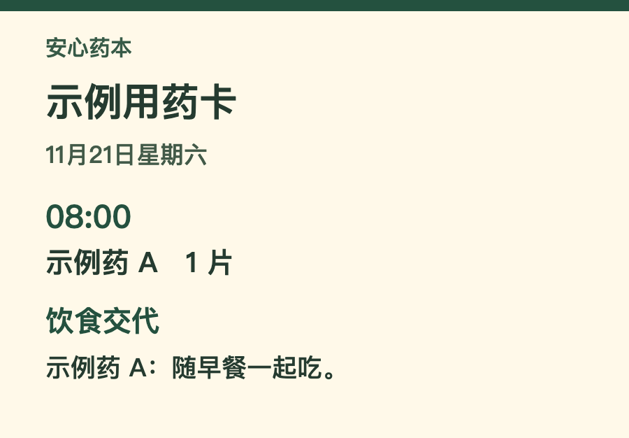

安心药本 · 产品设计
服务在家自己吃药、读药袋有困难的中老年人。让使用者能认出手里的药，听懂已确认的吃法，到点知道该看哪份安排，吃完能留下记录。
一天怎么用
早饭前，王阿姨想起医生给她换了一种药。她打开网页，点“拍药盒”。如果照片只有商品包装，系统可以帮她认药，但仍需补拍写有个人用法的药袋，或由她按医嘱补充。核对时，她可以听一遍；听到的内容与药袋一致，再点“已核对，保存”。
第二天到约定的时间，她收到“查看用药安排”的提醒。打开后听到时间、药名、每次用量和已确认的饮食交代。吃完点“我吃过了”。如果记不清有没有吃，页面保留“未确认”状态，不提示她再吃一次。
五项需求与界面
- 1 · 让老人自己上手
- 首页先给今天的安排。已有计划时突出下一次的时间和药名。新用户直接登记第一份药。主要按钮用动作命名，支持系统字号、普通话慢速朗读和重复播放。错误在发生时显示。
- 2 · 拍照、相册或聊天登记
- 拍药盒认名称，拍药袋或处方核对个人用法。聊天从“您每天吃什么药？”开始，允许一句话回答多个信息。缺哪项问哪项。称呼可跳过。多种药逐份核对；药名、规格、剂量不清或两条信息冲突时保留为待核对。
- 3 · 一张每日用药和饮食卡
- 按实际时间排序，同一时间的多种药各占一行。展示日期、完整药名、必要的规格、每次用量。饮食交代关联到具体药品，区分饭前、随餐、饭后；只转述有依据的内容。导出 PNG，可发给家人或放大查看。截图反映生成当时的安排。
- 4 · 能点，也能听
- 首页听整天，登记时听问题和核对结果，用药卡可重听。读出药名、数字和单位。正式版需校验“0.5 毫克”“半片”等易混用量的发音。系统缺少中文语音时显示可读文字。
- 5 · 每天提醒并记录
- 每种药绑定每天一个或多个时间。用户收到提醒后自行记录已服，点错可撤销。当天未确认的历史时段可查看。修改或停用计划时，正式版同步取消旧的未触发任务。
从一句话到一张卡
老人说 “我姓王。那种药我早饭时吃，几片记不清了。”
助手问 “王阿姨，能拍一下写着药名和吃法的药袋吗？”
老人说 “药袋没带。”
助手答 “先帮您记下来。等找到了药袋，我们再核对每次吃多少。”
这里仍是待核对记录。“早饭时”保留为原话。用量确认后再问平时希望几点收到提醒，老人选定的提醒时间与医生交代的进餐关系分别保存。

DeepSeek Harness 怎么接入
- 理解输入。 网页将经同意发送的图片或文字交给服务端。服务端通过 DeepSeek Harness SDK 建立独立会话，图片使用支持视觉输入的模型。会话只开放药品目录查询和草稿整理能力。
- 提取候选。 按药品拆分，输出候选药名、规格、每次用量、频次、服用时段、饮食交代，以及每项对应的来源原文。照片看不清、同名不同规格、语义冲突均进入追问。药盒上“每片含量”与患者“每次吃几片”分别建字段。
- 核对与保存。 复用项目现有药品目录查候选；个体吃法取自经核对的医嘱。对饮食相关建议，优先采用药师或医生针对本人的交代；引用说明书时需匹配具体产品并使用审核过的条目。缺少依据就保留空项。照片离开设备前说明用途，允许通过手工核对继续。
- 生成与提醒。 服务端校验计划后，以同一份结构化数据生成页面、PNG 和朗读稿。生产调度按本地时区、计划版本、起止日期及停用状态生成提醒。使用用户、药品、当地日期、时段和计划版本做去重，送达与已服分别记录。手机锁屏由服务端调度配合 Web Push 和 Service Worker；权限未开时保留日历路径。
本轮交付边界
可直接体验 拍照入口、相册照片预览、手工核对、引导式聊天、待核对暂存、浏览器本地保存、每日多时段、已服及撤销、中文系统朗读、用药卡 PNG、前台到点提醒，以及带每日重复和闹钟的日历文件导出。相机、语音和日历行为依设备而定。
进入开发后接入 真实 Harness 视觉识别和自由多轮对话、药品规格与证据定位、个体疗程、经审核的饮食知识，以及服务端推送。当前原型适用于演示每日固定安排；短期疗程、按需用药、隔日用药与剂量调整需单独设计。
第一轮怎么验收
- 让目标用户拿一张示例药袋，独立找到拍照入口，听完后指出药名、时间和用量。观察哪一步需要旁人解释。
- 给一张只有药名、没有个人用量的照片。预期记录停在待核对，卡片和提醒中均不出现该药。
- 同一份示例药登记早晚两次，核对卡片、语音、提醒时间一致。勾选早上已服，晚上的状态仍然独立。隔天重新生成当日记录。
- 在目标手机上分别测试相机授权、语音是否可听、拒绝权限后的替代路径、锁屏到点触达，以及修改或停药后还有没有旧提醒。正式上线前，用真实目标设备完成这组测试。